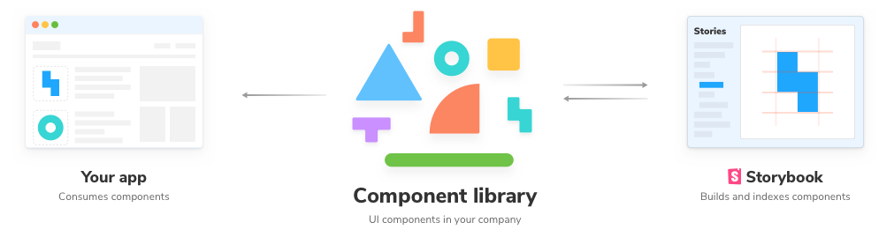

Storybook
Storybook is a tool for UI development. It makes development faster and easier by isolating components. This allows a UI to be developed without needing to start up a complex development stack or application.
Introduction to Storybook
Storybook is a tool for UI development. It makes development faster and easier by isolating components. This allows a UI to be developed without needing to start up a complex development stack or application.
Storybook integrates with the most popular JavaScript frameworks and libraries, including React.
Storybook helps us to document components for reuse and visually test our components to prevent bugs.
We can extend Storybook using addons, to fine-tune responsive layouts or verify accessibility.
Install
Storybook needs to be installed into a project that is already set up with a framework. It will not work on an empty project.
We can use the Storybook CLI to install Storybook in a single command within our existing project's root directory:
npx sb init
Once installed, start Storybook locally in development mode:
npm run storybook
Once the command has successfully run, a working version of Storybook should start running at http://localhost:6006/. It will automatically open the address in a new browser tab and the welcome screen will be displayed.
What is a Story?
A story captures the rendered state of a UI component. Developers write multiple stories per component that describe the states a component can support.
The stories can be viewed in the Storybook UI and the code behind each story can be found in files that end with .stories.js or .stories.ts
The stories are written in Component Story Format (CSF), an ES6 modules-based standard for writing component examples.
The Storybook CLI will demonstrate the types of components we can build with Storybook: Button, Header, and Page.
What is a Design System?
A design system is a collection of reusable components that can be assembled together to build applications and act as a single source of truth.
Addons
An addon allows us to extend the basic functionality of Storybook and add new features.
If we include Storybook in our project, the Essentials addon - @storybook/addon-essentials - is already installed and configured for you. The Essentials addon is "zero-config" meaning it comes with a recommended configuration out of the box.
To install an addon, we use npm or yarn.
# npm
npm install @storybook/addon-essentials --save-dev
# yarn
yarn add @storybook/addon-essentials --save-dev
Once installed, we include addons in the Storybook configuration file, .storybook/main.js